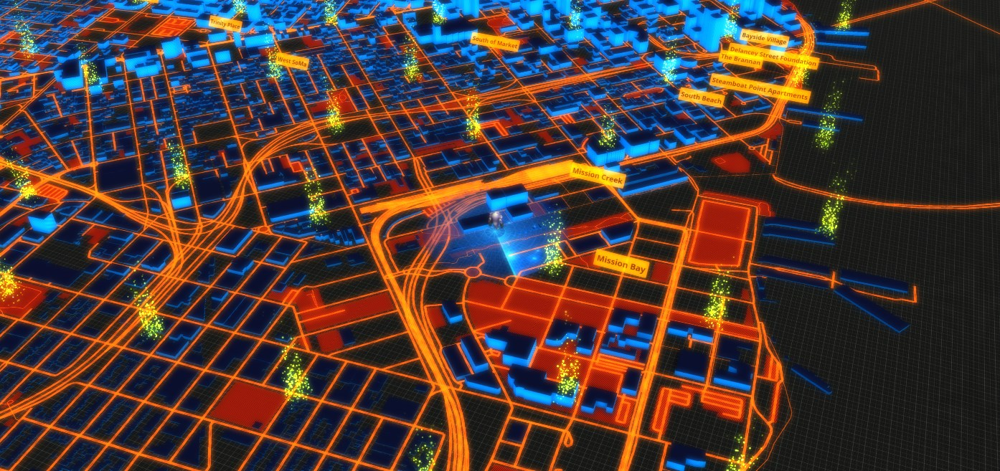
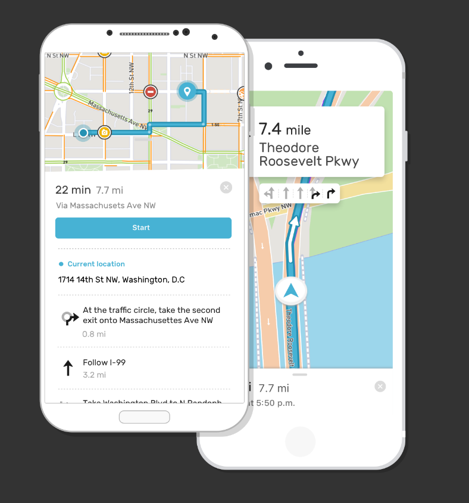
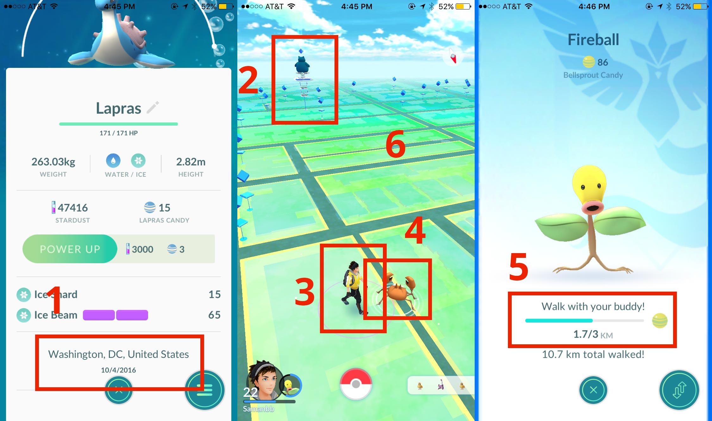

Designing games with Mapbox
I'm going to talk about using location data in games. Talk will be three parts: start by introducing Mapbox, then discuss what it means to use location in games, and then cover what our Unity SDK is capable of.
Hi! I'm Saman, I work at Mapbox
An introduction: I work at Mapbox as a designer/developer. Background in is web design. At Mapbox, I make tools for designers, developers. I implemented a few features in the Unity SDK but my main focus is elsewhere.
Normally, I design maps & tools for making maps
An introduction: I work at Mapbox as a designer/developer. Background in is web design. At Mapbox, I make tools for designers, developers. I implemented a few features in the Unity SDK but my main focus is elsewhere.
Early experiment with Mapbox + Games
Last summer there was a lot of buzz around games + maps, so I started doing some experiments with our web-based tools.
Imitation Pokemon go map with Mapbox tools.
Here's another experiment. I re-created the pokemon go map with Mapbox tools, and made a little web app.
Mapbox provides building blocks for location.Enough about me. Our roots are in web and mobile. Games are new for us. Use our tools to create the experience you want to provide users. Our maps power the weather channel, Lonely Planet, National Geographic, Mapquest.
What does building blocks mean? Web APIs!
Vector map tile APIVector tiles are an efficient delivery format for data. We can cut a huge dataset up into tiny pieces, and just deliver those pieces. It's fast and designed for runtime customization.

Vector tiles in UnityOur Unity SDK is designed to make it easy for you pull in data from vector tiles and generate meshes from the data at run time. You define how you want to generate the world, and every player everywhere will get transported into that world.
Vector tiles in UnityOur Unity SDK is designed to make it easy for you pull in data from vector tiles and generate meshes from the data at run time. You define how you want to generate the world, and every player everywhere will get transported into that world.
Raster map tile APIRaster tiles are another one of the services.
Use raster tiles for elevation meshes.Mapbox provides raster tiles that encode elevation data, so you can build meshes.
Procedurally generate worlds from raster data.Our games team has been getting really creative with raster data in Unity. This minecraft style map was generated based on real world raster data.
Procedurally generate worlds from raster data.Here's a shot of the Alps.
Geocoding APIReverse geocode to get the name for a set of location coordinates, or Forward geocode to find the coordinates that match any string.
Connect users to the real world with geocoding.Here's an example of using the geocoder to get the address for a nearby cafe.

Directions and traffic APIsMapbox provides the API – giving developers as much flexibility as possible to build their own directions interactions. We're the only major mapping companiy that lets you have directions right in your app and lets you have control over the experience
The directions API in Unity.This screenshot shows off both the result of a directions API call, and it shows a visualization of our traffic vector tiles in Unity.
We collect anonymized data from our users usersMillions of miles of data. We use it to improve all our services: the basemap, the directions ETAs, and helps us know which parts of the world to focus our efforts on.
Mapbox contributes data to OpenStreetMapOpenStreetMap is like the Wikipedia of Map data. Mapbox relies on OpenStreetMap as the source for a lot of our data. With the help of telemetry, we are able to contribute stead improvements back to the map that in turn benefits everyone who uses OpenStreetMap.
We build design toolsData is great – but it's very challenging to build anything with just raw data. We also build tools that make it easy to create and edit your own map data, and build visualizaions with that data.
We build developer tools and core rendering technologyBesides making visual design tools, we focus on the developer experience of using map data. We want to make it easy to build exactly the kinds of experiences developers want to build, on any platform (including Unity). We have manture SDKs for iOS, Android, and the web.
What does it mean to use location in game design?I've showed off a little of what is possible. Now I want to talk about it means to actually turn some of these features into gameplay mechanics.
Or... unlocks very old types of gameplay experiencesI think it's ironic that location based games sound kind of futuristic. Location based games are as old as civilization: ever heard of Hunting? Sports? Location is the context for play, always has been. What the Mapbox SDK is doing is providing an opportunity to bridge the forms of play with the newest forms.
Pacmanhattan (2014)Designers have been experimenting with location in games for a long time. A game of pacman is digitally superimposed over the real world, and people perform the roles of Pacman and the ghosts. The ghosts attempt to chase and catch Pacman, Pacman attempts to touch as many coins as possible.
Pokemon Go (2016)Pokemon Go. I'm sure we all know about this one. Over 500 million downloads. Location data is at the core of the game. Location data powers all sorts of subtle and not so subtle parts of the game, from the basemap, to Pokemon spawn points, to the little display that tells you where you captured a pokemon (getting that name requires a reverse geocode).

Location is everywhere in Pokemon Go!Pokemon Go has it's flaws, but it's a state of the art game that uses location to it's fullest and it's worth talking about. Made with Unity. 1) Reverse geocoding to find the name a name to match the coordinates where I got this Lapras. 2) A dataset of points of interest that define PokeStops 3) User location using Native APIs 4) Pokemon spawn points generated based on global basemap data from OpenStreetMap. 5) Finaly, user activity. You could build a game about any one of these mechanics.
Games can be broadly definedMoves and other activity trackers can be viewed as games. Some of these apps even have competitive aspect, which makes them indistinguishable from a game. Uses passive mechanic of GPS tracking to give players a score.
Start experimenting! mapbox.com/unity to download the beta
Thank you! @samanbb on Twitter.
 Early experiment with Mapbox + Games
Early experiment with Mapbox + Games
 Imitation Pokemon go map with Mapbox tools.
Imitation Pokemon go map with Mapbox tools.
 Vector tiles in Unity
Vector tiles in Unity
 Use raster tiles for elevation meshes.
Use raster tiles for elevation meshes.
 The directions API in Unity.
The directions API in Unity.
 Games can be broadly defined
Games can be broadly defined